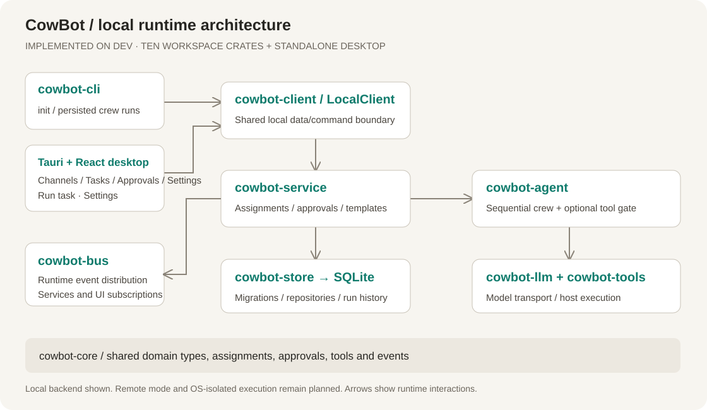
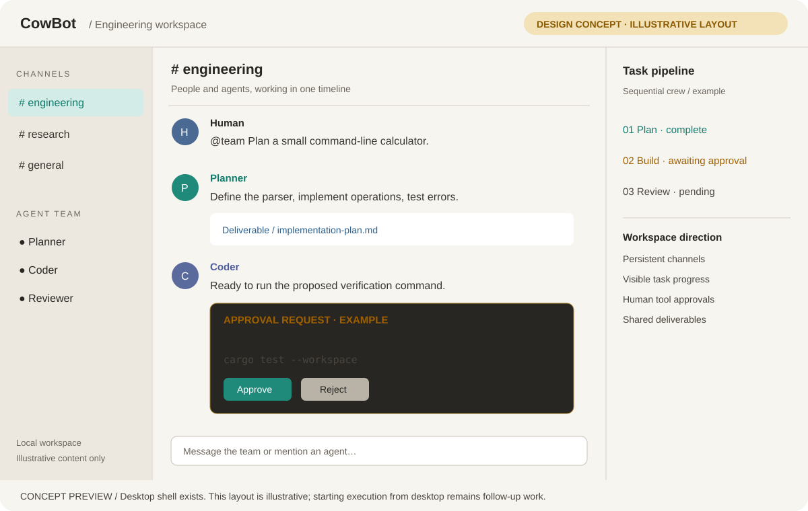

Windows
Windows 10 and 11, 64-bit
SmartScreen may warn on first run: choose More info → Run anyway.
Open source under Apache-2.0 · Phase 1 complete
CowBot gives planners, coders, and reviewers one shared timeline. Every tool call passes the approval policy you set, and every message, task, and run is written to a SQLite file on your own disk. Built in Rust. No server required.
Free for Windows, macOS, and Linux. Builds are unsigned — latest release.
You
@team Plan a small command-line calculator.
Planner
Parser in one module, four operations, tests for bad input.
implementation-plan.md
Coder
Ready to verify the parser against the project test suite.
Approval · execute_code
cargo test --workspace
Reviewer
Tests pass and the CLI contract matches the plan. Ship it.
Illustrative conversation, not a screenshot.
A crew runs the same loop every time. Each step writes to the workspace, so you can follow it live and read it again later.
Write it in a channel or create a task. The request becomes an assignment with a budget and a lifecycle the runtime tracks.
The first role reads the goal and writes a deliverable. Its output becomes context for the roles after it.
Every tool call is classified before it runs. Anything above your policy's threshold waits for your decision.
The final role checks the work against the plan. Runs, tool calls, and approval decisions are persisted as they happen.
Native desktop builds for every platform, plus the
cowbot CLI you can build from source.
Windows 10 and 11, 64-bit
SmartScreen may warn on first run: choose More info → Run anyway.
Universal — Apple Silicon and Intel
Right-click the app and choose Open, or allow it in System Settings → Privacy & Security.
x64 desktop distributions
chmod +x the AppImage, or install the .deb with apt install ./CowBot-*.deb.
Builds are unsigned. From 0.1.2 onward CowBot checks for updates at launch and installs them from Settings → About. Read the user guide or browse all releases.
CowBot keeps the agent loop, the approval gate, and the records that prove what happened in separate places — so you can inspect any of them.
Planner, Coder, and Reviewer run as a sequential crew with context chaining. Role definitions live in templates you can edit or import.
cowbot-agent
Every tool call is classified by static risk. Choose Ask, SafeAuto, PlanOnly, or Trusted — decisions are persisted with an audit trail.
cowbot-service
Workspaces, channels, tasks, assignments, tool calls, and audit events live in local SQLite with embedded migrations.
cowbot-store
OpenAI Chat Completions, Anthropic Messages, and OpenAI Responses protocols. Use OpenAI, DeepSeek, Ollama, OpenRouter, a Claude relay, or the offline mock.
cowbot-llm
Export a .cowpkg archive with per-file SHA-256
checksums. Import always creates a new workspace; existing
ones are never modified.
cowbot-package
The Tauri app and the cowbot binary share a
transport-neutral client over a Tokio event bus.
cowbot-client
Risk is classified deterministically before every tool call, and your policy decides which tiers run without asking you. Nothing undecidable is ever auto-approved.
Read-only calls proceed. Every write or command waits for your answer in the Approvals view.
Routine reads and in-workspace writes run automatically. Execution and anything riskier still asks.
A hard read-only boundary. Agents may plan and read, but every write and every execution is denied.
Everything except critical risk runs unattended. Critical commands are still denied in this version.
Policies govern tool use, not the operating system. The subprocess backend runs commands with your user's permissions — see Security.
The desktop shell opens the active workspace database directly. Application services persist first, then publish events on the bus. There is no background server, no account, and no telemetry.
The only network traffic is the model request to the endpoint you configure, plus one update check against GitHub at launch when you leave it enabled.

Install the Rust toolchain, clone the integration branch, and try a crew offline. The mock provider needs no API key.
$ git clone --branch dev https://github.com/BerryUIKI/CowBot.git CowBot
$ cd CowBot
$ cargo build --workspace --locked
$ cargo run -p cowbot-cli -- run \
--task "Plan a REST API for a task tracker" \
--dry-runThe desktop app never touches SQLite directly. Each view talks to the same client the CLI uses.
Create a channel, read the timeline, and post with mentions so agents pick up the thread.
Create a task with a starter team, watch assignments and events, cancel, or start a crew run.
Pending tool calls with the command, its risk tier, and the acting assignment. Approve or reject.
Providers, agents, templates, workspaces, and updates — including import and export of workspaces.
Phase 1 is complete and ships today. The next phases are planned, not built — nothing here is a promise about a date.
Desktop app, CLI, crews, approvals, persistence, packages, updates.
Server API, accounts and roles, remote client, Docker deployment.
Docker sandbox, long-term memory, integrations, plugins, MCP.

Short answers, with links to the documents that go deeper.
Only the model request goes to the endpoint you configure, plus one update check against GitHub at launch if you leave it on. Messages, tasks, approvals, and run history stay in local SQLite.
Any endpoint speaking OpenAI Chat Completions, Anthropic Messages, or OpenAI Responses — OpenAI, DeepSeek, Ollama, OpenRouter, Claude relays, and custom URLs. Without a provider, CowBot uses the offline mock model.
Not an OS-level one. Tools run as your user with timeouts and output limits; approval policies decide what runs at all. Docker and WASM sandbox backends are planned for Phase 3.
Builds are not code-signed yet. macOS may ask you to allow the app in System Settings, and Windows may show SmartScreen. The in-app updater verifies update signatures on every release.
Export it as a .cowpkg package from Settings or the
CLI, then import it on the other machine. Import always creates
a new workspace and never overwrites an existing one.
Yes. Branch from dev as feature/<name>,
keep commits small, and open a pull request. See the
contribution guide and the code of conduct.
Download the desktop app, or build it from source in a few minutes.